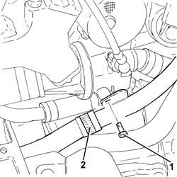
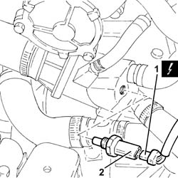
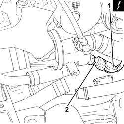

1060G14 engine coolant temperature sensor - r r
- Path
- Procedures > 10 ENGINE > 1060 DIESEL FUEL INJECTION > 1060G pressure pump electric control > 1060G14 engine coolant temperature sensor - r r
- Kind
- repair procedure (removal / refitting; the operation number is the code)
- Applies to
- all engines; all production periods
- Interactive page
- https://sloeber94.github.io/elrnDB-fDbl/en/#/2584413
Applies to: all engines; all production periods
 Removing
Removing
 Refitting
RefittingPosition the car on the ramp.
Ensure that the ignition key is in the OFF position, then disconnect the negative battery terminal.
 | Name | Connector |
|---|---|---|
- | Battery | A1 |
Carry out 7055B54 under-engine guard - r r .
Carry out 1088D10 lower sleeve for coolant outlet from radiator - r + r .
Carry out 5530B10 battery - r+r .
Carry out 5530B52 Battery DRIP TRAY/SUPPORT - R.R. .
1. Undo the bolts fixing the rigid engine oil vapour recirculation pipe.
2. Loosen the band and disconnect the engine oil vapour recirculation pipe from the rigid pipe.

Applies to: all engines; all production periods
Removing
RefittingProceed with the removal 5530B10 battery - r+r .
Proceed with the removal 5530B52 Battery DRIP TRAY/SUPPORT - R.R. .
1. Disconnect the electrical connection from the engine coolant temperature sensor.
| Name | Connector |
|---|---|---|
1 | Data not available yet |
2. Undo and remove the engine coolant temperature sensor.

Applies to: all engines; all production periods
1. Disconnect the electrical connection from the engine coolant temperature sensor.
| Name | Connector |
|---|---|---|
1 | Data not available yet |
2. Undo and remove the engine coolant temperature sensor.

Applies to: all engines; all production periods
Refitting
RemovingPlace the engine coolant temperature sensor back in its housing and tighten it to the recommended torque.
 | Fastening | Component | Ø | Value (daNm) |
|---|---|---|---|---|
- | - | ENGINE COOLANT TEMPERATURE SENSOR. | M12 | (Thermostat side) 1.8 ÷ 2.2 |
Connect the electrical connection to the engine coolant temperature sensor.
Proceed with the refitting 5530B52 Battery DRIP TRAY/SUPPORT - R.R. .
Proceed with the refitting 5530B10 battery - r+r .
Applies to: all engines; all production periods
Refitting
RemovingPlace the engine coolant temperature sensor back in its housing and tighten it to the recommended torque.
| Fastening | Component | Ø | Value (daNm) |
|---|---|---|---|---|
- | - | ENGINE COOLANT TEMPERATURE SENSOR. | M16 | (Thermostat side) 3.1 ÷ 3.7 |
Connect the electrical connection to the engine coolant temperature sensor.
| Name | Connector |
|---|---|---|
- | Data not available yet |
Connect the engine oil vapour recirculation hose to the rigid pipe and tighten the band.
Tighten the bolts securing the engine oil vapour recirculation rigid pipe.
Carry out 5530B52 Battery DRIP TRAY/SUPPORT - R.R. .
Carry out 5530B10 battery - r+r .
Connect the lower coolant outlet hose from the radiator, radiator side, and tighten the band.
Refill the engine cooling system with coolant 0010T20 coolant change .
Carry out 1088D10 lower sleeve for coolant outlet from radiator - r + r .
Carry out 7055B54 under-engine guard - r r .
Connect the battery negative terminal.
| Name | Connector |
|---|---|---|
- | Battery | A1 |
Remove the car from the ramps.